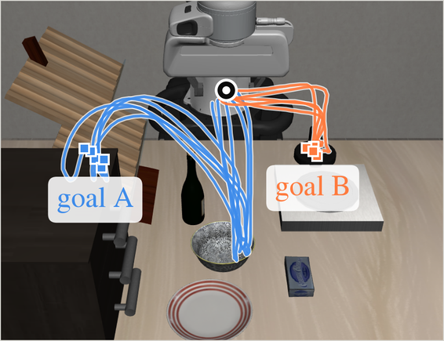
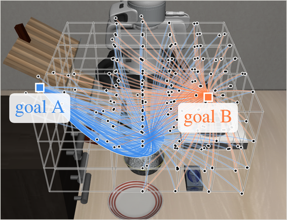
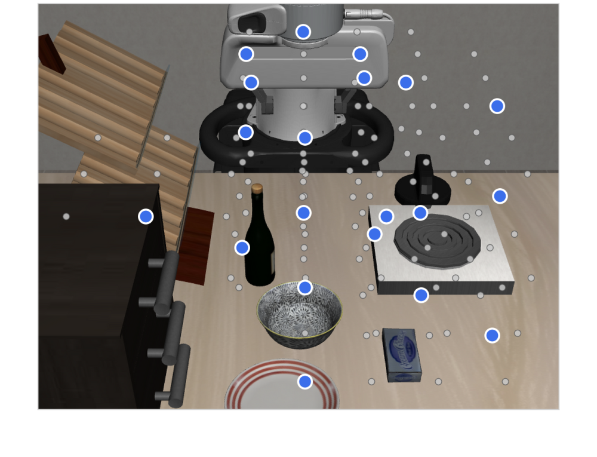
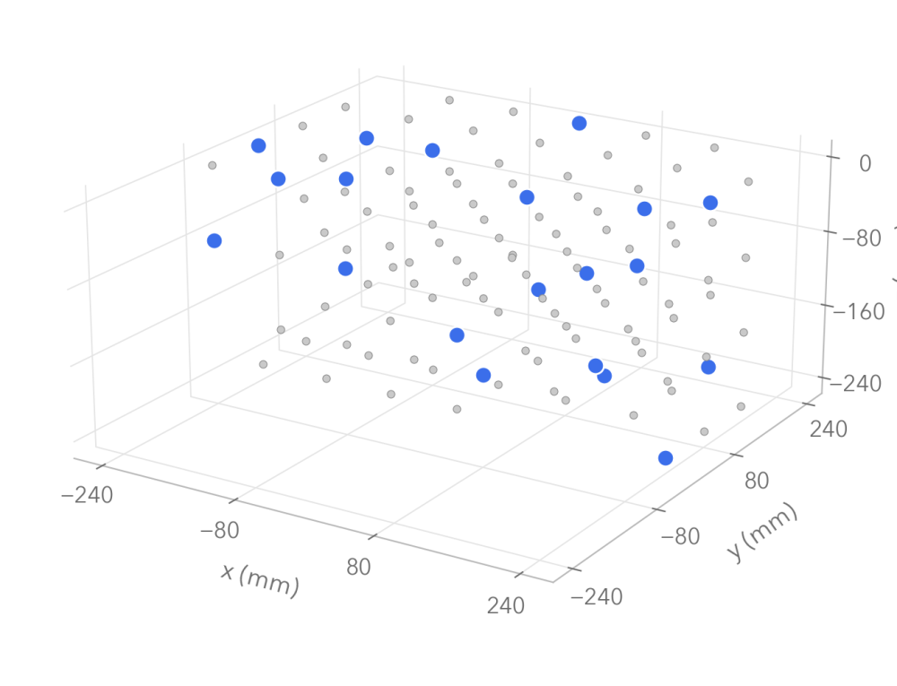
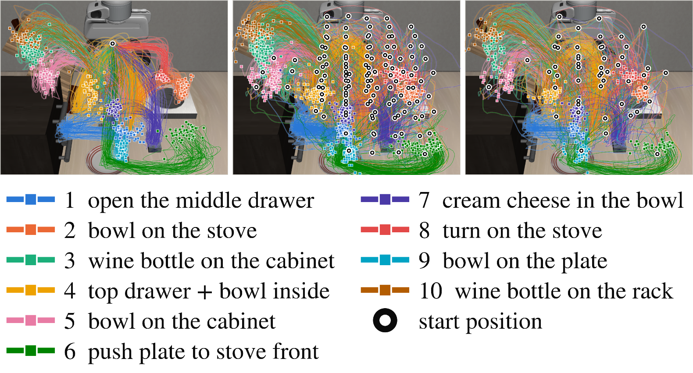
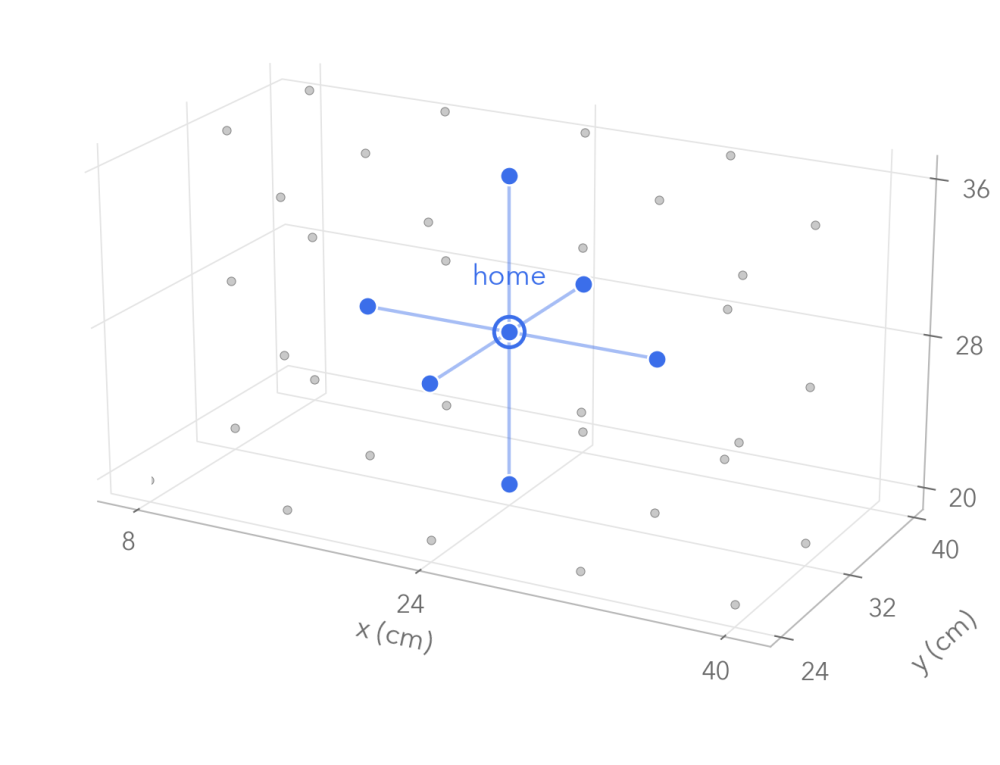
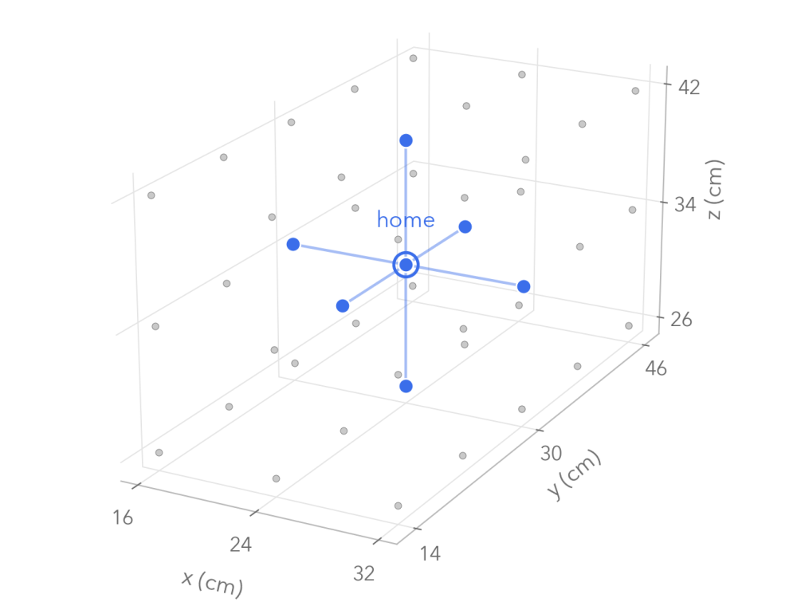

The problem
When the commanded goal changes mid-execution, the robot has to redirect from an intermediate state it reached while pursuing the previous goal. Those states are not where demonstrations usually start, so re-querying the policy from one of them often leaves the arm committed to the old goal — it continues toward the old object, old destination, or an already-initiated drawer-opening behavior.
With the command held fixed, these policies succeed across all tested start positions. Performance degrades when the goal is changed mid-execution.
How STIR works
- Grid-based intermediate-state collection. Demonstrations toward each goal start from a spatial grid of intermediate positions across the workspace, rather than from a single initial configuration.
- Steerability Score Map. We compute goal-conditioned demonstration density (GDD) over the workspace and use it as a spatial indicator of how well each position supports continuation toward a given goal.
- Replanning at the switch. When the goal changes, STIR selects a nearby higher-scoring resume state, relocates the arm there, and re-queries the policy under the updated goal.
All variants fine-tune the same base policy (π0.5) with the same procedure. We denote the fixed-initial-state and grid-based intermediate-state fine-tuned policies πfixed and πgrid, respectively. Results then compare direct execution with STIR replanning after a goal switch.
Where demonstrations start
Step 1 determines how broadly the demonstrations cover potential resume states. Collecting from a single initial configuration provides limited coverage of these states, whereas grid-based intermediate-state collection broadens coverage of intermediate states that may be encountered after a goal switch. In the panels below, blue and orange trajectories are demonstrations toward goal A and goal B, and each marked position in the grid-based panel seeds its own demonstration toward both.


Coverage across LIBERO-GOAL
The panels above use two goals for legibility. The simulation study runs on LIBERO-GOAL, whose ten tasks share one scene and differ only in the commanded goal, and the contrast carries over: fixed-initial-state collection leaves the demonstrations concentrated along a few routes, while grid-based intermediate-state collection distributes their start states across the workspace. Demonstrations are collected from 121 start nodes per task at 80 mm spacing; the panels show a subset for legibility.



Switch success on LIBERO-GOAL
Grid-based intermediate-state collection helps across every policy backbone tested, and the gap widens the later the switch arrives: early switches are recoverable either way, while middle and late ones are where fixed-initial-state collection runs out of support.
| Scheme | Traj. | No switch |
Switch success rate | CMI | |||
|---|---|---|---|---|---|---|---|
| Early | Middle | Late | Overall | ||||
| Diffusion Policy | |||||||
| Fixed-init | 500 | 0.928 | 0.333 | 0.100 | 0.050 | 0.161 | 1.835 |
| Grid-based | 1210 | 0.991 | 0.648 | 0.219 | 0.202 | 0.356 | 1.329 |
| Grid-based | 500 | 0.976 | 0.585 | 0.174 | 0.136 | 0.298 | 1.632 |
| π0.5 (full fine-tuning) | |||||||
| Fixed-init | 500 | 0.973 | 0.593 | 0.175 | 0.201 | 0.323 | 1.781 |
| Grid-based | 1210 | 0.976 | 0.737 | 0.335 | 0.359 | 0.477 | 1.657 |
| Grid-based | 500 | 0.991 | 0.749 | 0.312 | 0.317 | 0.460 | 1.845 |
| π0.5 (LoRA) | |||||||
| Fixed-init | 500 | 0.980 | 0.607 | 0.175 | 0.182 | 0.321 | 1.736 |
| Grid-based | 1210 | 0.986 | 0.733 | 0.314 | 0.328 | 0.458 | 1.529 |
| Grid-based | 500 | 0.980 | 0.731 | 0.298 | 0.293 | 0.441 | 1.736 |
| OpenVLA | |||||||
| Fixed-init | 428 | 0.725 | 0.356 | 0.110 | 0.050 | 0.172 | 0.991 |
| Grid-based | 1210 | 0.918 | 0.617 | 0.202 | 0.194 | 0.337 | 1.061 |
| Grid-based | 500 | 0.910 | 0.584 | 0.166 | 0.121 | 0.290 | 1.209 |
Where to resume
Step 3 requires selecting a resume state. Below, four selection rules are compared in simulation from the same switch state; the dashed circle is the relocation radius and the number on a candidate is its GDD under the updated goal.
Replanning schemes on LIBERO-GOAL
The four clips above are four of these rows. Relocating at random already beats resuming in place, and moving toward the lowest-scoring neighbor is worse than not moving at all — the gain comes from where the arm goes, not from the fact that it moves.
| Replanning scheme | Switch success |
|---|---|
| πfixed, resume in place | 0.237 |
| πgrid, resume in place | 0.412 |
| πgrid + random relocation | 0.457 |
| πgrid + local lowest-GDD | 0.369 |
| πgrid + global highest-GDD | 0.426 |
| πgrid + local highest-GDD (ours) | 0.534 |
Results
Switch success rates in two real-robot environments. Dashed lines show the corresponding fixed-goal success rates, where the commanded goal is not changed during execution.
Failure analysis
Each bar is every switch episode for one configuration, split by outcome. Old-goal commitment—continuing the behavior associated with the pre-switch goal—is the failure mode replanning targets, and it is the block that collapses. What the success rate gains, that block loses.
Switch timing
Success as a function of how far into execution the command changes.
Real 1 — three-cube pick-and-place
Three cubes sit on a table and the robot carries the commanded one to a tabletop goal region. We evaluate three predefined goal switches (red → blue, blue → black, black → red) from seven start positions: the home position and its six axis-aligned neighbors.
Direct execution, two collection schemes
Grid-based data, with and without replanning
Grid-based intermediate-state fine-tuning alone does not eliminate state-dependent switching failures: the same policy can succeed from one resume state and fail from another. STIR addresses this variation by relocating to a nearby state with higher GDD under the updated goal.
Start positions
Demonstrations are collected on a 45-node grid at 8 cm spacing, shown in gray. Evaluation uses the seven marked in blue: the home position and its six axis-aligned neighbors.

Language instructions
- Pick red cube and place on the black square
- Pick blue cube and place on the black square
- Pick black cube and place on the black square
Real 2 — object–destination manipulation
Two objects (tape and scissors) are paired with two target destinations (a tabletop goal region and a drawer), yielding four object–destination tasks. A goal switch can change the destination, the object, or both, and drawer tasks require opening the drawer before placing. Each switch case is evaluated once from each of seven start positions.
Start positions
Same protocol as Real 1: a 45-node grid at 8 cm spacing shown in gray, evaluated from the seven marked in blue.

Language instructions
- Pick the scissors and place on the black square
- Pick the tape and place on the black square
- Open the upper drawer and place the scissors inside
- Open the upper drawer and place the tape inside
Data collection
Demonstrations are collected through VR teleoperation. The operator sees the scene through the headset's passthrough view, together with the two policy camera feeds, and controls the robot using the VR hand controllers. Start positions are sampled across a grid rather than repeated from the home position.